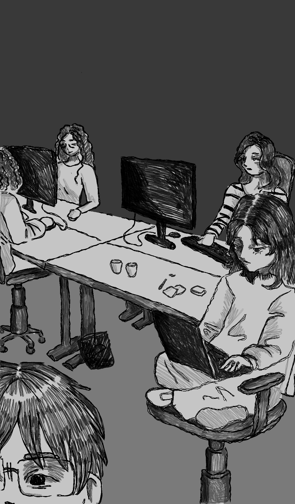

L'univers du bureau changeait en fonction de ses occupants: le ton y était calme en présence de nos responsables. Lorsqu'elles n'étaient pas là, on se permettait de mettre de la musique et de parler entre nos tables.